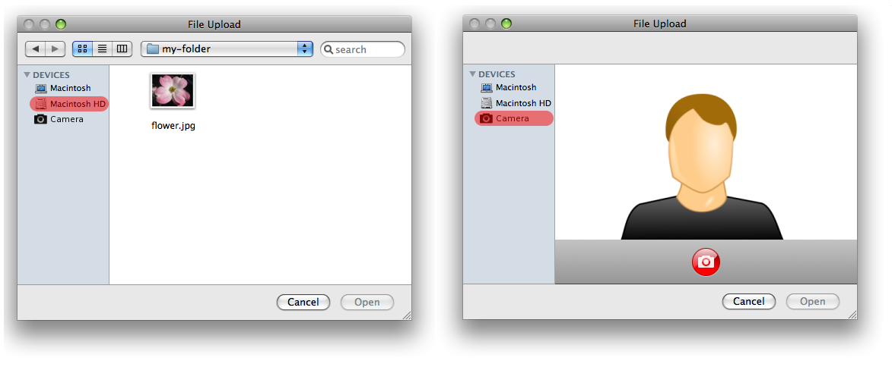

This specification covers a subset of the media capture functionality being worked on by the DAP WG. It is specifically designed to be simple and declarative.
The HTML Media Capture specification enables web page
authors to declaratively specify the upload of audio, video and still
images by adding a new attribute to the HTML input
element. This enables unified capture and upload from the device
capture device without requiring a user to save a file and then upload
it in separate steps.
Such an approach does not provide detailed user control over capture, so use cases requiring correlating specific individual audio and video streams may be met by using another specification, Media Capture and Streams [[GETUSERMEDIA]]. Access to media streams from the hosting device is out of scope for this specification.
This specification extends the HTMLInputElement
interface with a new capture attribute. The
capture attribute enables content authors to
indicate the media to be captured and uploaded. Conformant user agents
provide their users a more seamless access to the above-mentioned media
capture capabilities of the hosting device.
This specification defines conformance criteria that apply to a single product: the user agent that implements the interfaces that it contains.
Implementations that use ECMAScript to implement the APIs defined in this specification must implement them in a manner consistent with the ECMAScript Bindings defined in the Web IDL specification [[!WEBIDL]], as this specification uses that specification and terminology.
The
input element,
HTMLInputElement interface,
accept attribute, and
File Upload state are defined in [[!HTML5]].
The term boolean attribute and the concept reflect are defined in [[!HTML5]].
In this specification, the term capture control type
refers to a specialized type of a file picker control that is
optimized, for the user, for directly capturing media of a MIME type
specified by the accept attribute.
The user agent should not enable any device for media capture, such as a microphone or camera, until a user interaction giving implicit consent is completed. A user agent should also provide an indication when such an input device is enabled and make it possible to terminate such capture. Similarly, the user agent should allow the user:
This specification builds upon the security and privacy protections
provided by the <input type="file"> [[!HTML5]] and
the [[!FILE-API]] specifications; in particular, it is expected that
any offer to start capturing content from the user’s device would
require a specific user interaction on an HTML element that is entirely
controlled by the user agent.
Implementors should take care of additional leakage of privacy-sensitive data from captured media. For instance, embedding the user’s location in a captured media metadata (e.g. EXIF) might transmit more private data than the user might be expecting.
This section is normative.
When an input element's type attribute
is in the File Upload state, and its
accept attribute is specified, the rules in this
section apply.
The capture attribute is a boolean attribute
that, if specified, indicates that the capture of media directly from
a device capture mechanism is preferred.
The capture IDL attribute MUST reflect the
respective content attribute of the same name.
When the capture attribute is specified, the
user agent SHOULD invoke a file picker of the specific
capture control type.
The HTMLInputElement interface's accept
attribute takes precedence over the capture
attribute. That is, if the accept attribute's value is set
to a MIME type that has no associated capture control type,
the user agent MUST act as if there was no
capture attribute.
capture attribute as defined in
this specification enables integrated capture and upload of audio,
video and still images, and complements the following behavior defined
in the File Upload state [[!HTML5]]:
User agents may use the value of [the accept] attribute to
display a more appropriate user interface than a generic file picker.
For instance, given the value image/*, a user agent could
offer the user the option of using a local camera or selecting a
photograph from their photo collection; given the value
audio/*, a user agent could offer the user the option of
recording a clip using a headset microphone.
The following examples demonstrate how to give hints that it is preferred for the user to capture media of a specific MIME type using the media capture capabilities of the hosting device. Both a simple declarative example using an HTML form, as well as a more advanced example including scripting, are presented.
<form action="server.cgi" method="post" enctype="multipart/form-data">
<input type="file" name="image" accept="image/*" capture>
<input type="submit" value="Upload">
</form>
<input type="file" accept="video/*" capture>
<input type="file" accept="audio/*" capture>
capture attribute
in markup:
<input type="file" accept="image/*" capture>
<canvas></canvas>
And handle the file upload in script via XMLHttpRequest:
var input = document.querySelector('input[type=file]');
input.onchange = function () {
var file = input.files[0];
upload(file);
drawOnCanvas(file);
displayAsImage(file);
};
function upload(file) {
var form = new FormData(),
xhr = new XMLHttpRequest();
form.append('image', file);
xhr.open('post', 'server.php', true);
xhr.send(form);
}
The image can also be displayed on the client-side without uploading
it e.g. for client-side image editing purposes, using the
FileReader and a canvas element:
function drawOnCanvas(file) {
var reader = new FileReader();
reader.onload = function (e) {
var dataURL = e.target.result,
c = document.querySelector('canvas'),
ctx = c.getContext('2d'),
img = new Image();
img.onload = function() {
c.width = img.width;
c.height = img.height;
ctx.drawImage(img, 0, 0);
};
img.src = dataURL;
};
reader.readAsDataURL(file);
}
Or alternatively, to just display the image, using the
createObjectURL() method and an img
element:
function displayAsImage(file) {
var imgURL = URL.createObjectURL(file),
img = document.createElement('img');
img.onload = function() {
URL.revokeObjectURL(imgURL);
};
img.src = imgURL;
document.body.appendChild(img);
}
When an input element's accept attribute
is set to image/* and the capture
attribute is specified as in the Example 1 or
Example 4, the file picker may render as
presented on the right side. When the attribute is not specified, the
file picker may render as represented on the left side.
